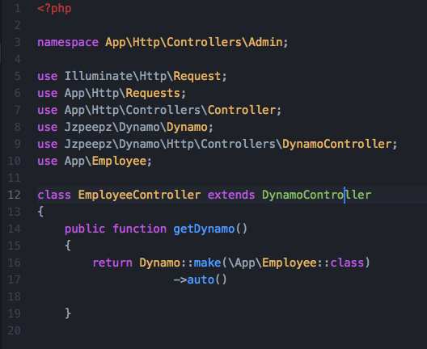
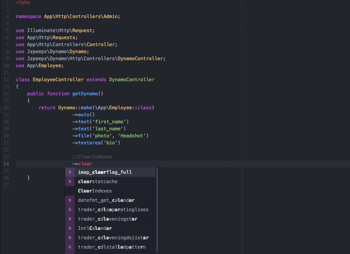
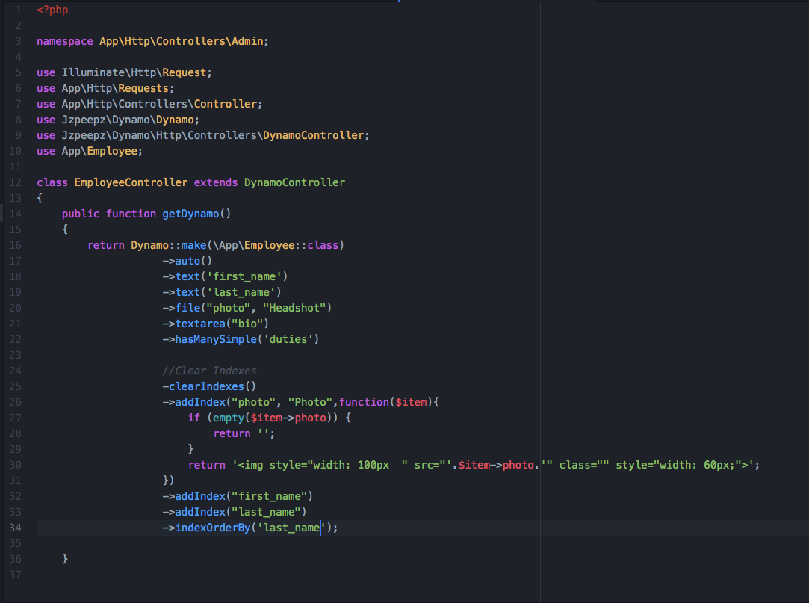
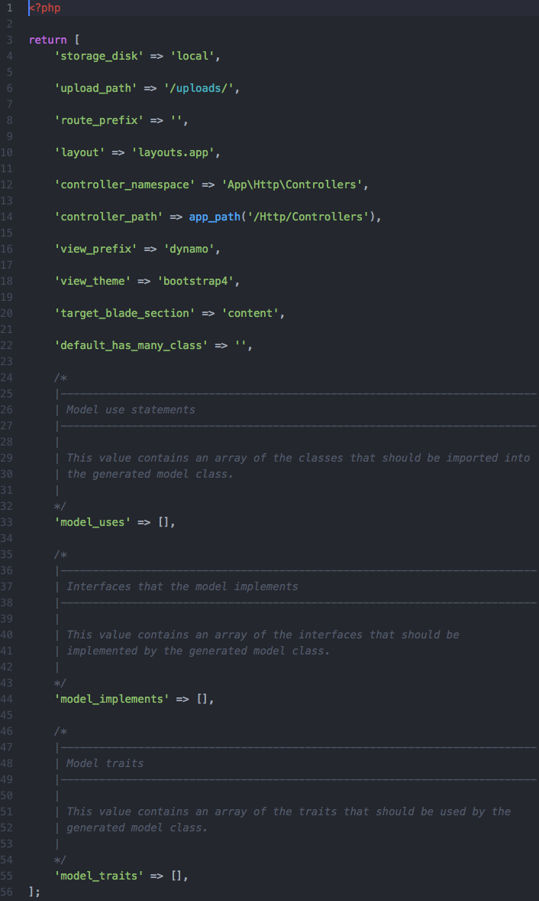

Welcome to Dynamo’s documentation!¶
Contents
- Welcome to Dynamo’s documentation!
- Installation
- Configuration
- Creating Form Groups
- Creating Many-to-Many Relationships Between Dynamo Models
- Step 1: Generate the two models you will be using.
- Step 2: Complete the needed migrations.
- Step 3: Add the proper belongsToMany Eloquent function to each model.
- Step 4: Chain the hasMany() method onto your Dynamo instance in both controllers. Make sure your key is the name of the Eloquent function from you model.
- Dynamo Methods

When you want to use a package but it doesn’t have good documentation…

What is Dynamo?¶
Dynamo is a package you can use in your existing PHP Laravel framework application to build admins. Dynamo is especially useful if you want to create your own custom CMS (content management system).
It allows you to create a controller, model, migration, and route for your admin with one command:
php artisan make:dynamo Employee
After running this you will notice an autogenerated route in your routes->web.php file. You will notice a new database migration has been created in your database->migrations directory. You will notice a new model made in your app directory. You will notice a new Dynamo Controller in your controller directory. This controller is specifically designed for creating admins with ease. By default the controller directory is set in your config file:
'controller_namespace' => 'App\Http\Controllers',
'controller_path' => app_path('/Http/Controllers'),
Need to opt out of some of the Dynamo magic?
php artisan make:dynamo Employee --migration=no --model=no --controller=no --route=no
The Dynamo Controller¶
The most helpful part about Dynamo is the Dynamo Controller. We highly encourage you to take a look at the DynamoController class and read the comments of each function to have a better understanding of what’s going on; however you don’t really need to understand anything that’s going on in this section to be able to use Dynamo; in fact the whole point of this package is so you don’t have to do this stuff yourself. If you’d like, skip this section, but its good to know whats going on under the hood ;) .
Starting off, the Dynamo Controller has an index function that returns an index view of all the resources. So in the Employee example, the index function would show a view of all the Employee models saved in the database:
/**
* Display a listing of the resource.
*
* @return \Illuminate\Http\Response
*/
public function index()
{
$items = $this->dynamo->getIndexItems();
return DynamoView::make($this->dynamo, 'dynamo::index', compact('items'));
}
The next two functions are create() and store(). Create shows the form view that the user will use to create Employee objects:
/**
* Show the form for creating a new resource.
*
* @return \Illuminate\Http\Response
*/
public function create()
{
$item = new $this->dynamo->class;
$formOptions = [
'route' => $this->dynamo->getRoute('store'),
'files' => true,
];
return DynamoView::make($this->dynamo, 'dynamo::form', compact('item', 'formOptions'));
}
Store() is the function that gets hit when the user presses the submit button on the Create an Employee form. Store will “store” this new Employee object in your database:
/**
* Store a newly created resource in storage.
*
* @param \Illuminate\Http\Request $request
* @return \Illuminate\Http\Response
*/
public function store(Request $request)
{
$item = new $this->dynamo->class;
$this->dynamo->store($item);
session(['alert-success' => $this->dynamo->getName() . ' was saved successfully!']);
return redirect()->route($this->dynamo->getRoute('edit'), $item->id);
}
The next two functions are edit() and update() which go hand-in-hand the same way create() and store() go hand-in-hand. When the user clicks the edit button on one of the Employee objects in the index view, the form view for that particular employee will be presented to the user so they can make changes to that Employee (perhaps update their phone number):
/**
* Show the form for editing the specified resource.
*
* @param int $id
* @return \Illuminate\Http\Response
*/
public function edit($id)
{
$className = $this->dynamo->class;
$item = $className::withoutGlobalScopes()->find($id);
$formOptions = [
'route' => [$this->dynamo->getRoute('update'), $id],
'method' => 'put',
'files' => true,
];
return DynamoView::make($this->dynamo, 'dynamo::form', compact('item', 'formOptions'));
}
Update() gets hit when the user presses the Submit button and whatever changes they made will get updated for that particular Employee in the database:
/**
* Update the specified resource in storage.
*
* @param \Illuminate\Http\Request $request
* @param int $id
* @return \Illuminate\Http\Response
*/
public function update(Request $request, $id)
{
$className = $this->dynamo->class;
$item = $className::withoutGlobalScopes()->find($id);
$this->dynamo->store($item);
session(['alert-success' => $this->dynamo->getName() . ' was saved successfully!']);
return redirect()->route($this->dynamo->getRoute('edit'), $id);
}
The final function on the Dynamo Controller is destroy(). This function gets hit when the user clicks the delete button in the index view, and an alert will appear asking them if they are sure they want to do this. If they press yes, the item will attempt to be deleted. If the item can’t be deleted due to throwing a QueryException (because you can’t add or update a child row if another object in the database is using it for a foreign key), it will redirect and say you can’t do that because this object is in use. Otherwise, the item will be deleted and they will be shown a success message, and this Employee no longer exist:
/**
* Remove the specified resource from storage.
*
* @param int $id
* @return \Illuminate\Http\Response
*/
public function destroy($id)
{
$className = $this->dynamo->class;
// Run through and look for fields with type 'multiSelect'
foreach($this->dynamo->getFields() as $field) {
if($field->type == 'hasMany') {
//if 'multiSelect' found then relational data may exist. Detach data from the model
$className::withoutGlobalScopes()->find($id)->{$field->key}()->detach();
}
}
$item = $className::withoutGlobalScopes()->findOrFail($id);
try {
$item->delete();
} catch (QueryException $e) {
session(['alert-danger' => $this->dynamo->getName() . ' cannot be deleted while in use!']);
return redirect()->route($this->dynamo->getRoute('index'));
}
session(['alert-warning' => $this->dynamo->getName() . ' was deleted successfully!']);
return redirect()->route($this->dynamo->getRoute('index'));
}
Customizing the admin¶
Admin customization happens in your controller inside the getDynamo() function of the Dynamo Controller. This function returns a Dynamo instance which has lots of chainable methods that customize your Dynamo admin. Lets stick with our Employee example:
This is what your Dynamo Controller will look like by default right after it is created. It has one function called getDynamo() that returns a Dynamo object. By default the auto() function is called which will take all the things your employee object consist of (that you defined in your database migration, say first_name, last_name, phone_number) and create fields in the form for them. You can chain on methods to this auto function if you need to do more specific things. It’s super easy! Check it out…
 Everything you see before the comment “//ClearIndexes” will appear in the form view when someone is creating an Employee object in the database. Everything you see after the comment “//ClearIndexes” will appear in the index view when someone is viewing all the Employees in the database. Now, keep in mind, all the function calls you see above happened automatically with the auto() function. The only thing the auto function can’t do is stuff like renaming a field like you see happen at “->file(“photo”, “Headshot”)” where you might want it to say Headshot rather than photo. We will go into this in more detail in the Dynamo Methods section.
This is the basics of Dynamo. You have created an admin on your custom CMS for managing Employees on your Laravel application is less than 2 minutes. Isn’t that powerful? You could do this for News Post, Products being sold on the site, Faq’s and Faq Categories, and so on.
Note
NOTE: For the full list of chainable methods on your Dynamo Object, refer to section Dynamo Methods!
Installation¶
Install via Composer:
composer require jzpeepz/dynamo
Include the service provider in your config/app.php:
Jzpeepz\Dynamo\DynamoServiceProvider::class
Publish the Dynamo config file:
php artisan vendor:publish --tag=dynamo
Note
NOTE: If using a local disk for uploading, be sure to symlink it to your public directory and provide the proper path in the config file.
If you’d like, the Github repo for Dynamo is here.
Configuration¶
You can edit the configuration of Dynamo at:
vendor->jzpeepz->dynamo->src->config->dynamo.php.
Storage disk to use to store uploaded files.
Path within the storage disk to store the uploaded files. This is also the directory within the public directory to which the storage directory is linked.
Prefix to add to all Dynamo routes.
Layout to use with Dynamo views.
Controller Namespace and path tells Dynamo where you want you’re controllers to be auto-generated. TODO
Creating Form Groups¶
return Dynamo::make(\App\Employee::class)
->group('groupName', function($dynamo) {
$dynamo->text('fieldName')
->text('fieldName');
});
Creating Many-to-Many Relationships Between Dynamo Models¶
Step 1: Generate the two models you will be using.¶
php artisan make:dynamo Faq
php artisan make:dynamo Category
Step 2: Complete the needed migrations.¶
Example Faq migration:
Schema::create('faqs', function (Blueprint $table) {
$table->increments('id');
$table->string('question', 255);
$table->mediumText('answer');
$table->timestamps();
});
Example Category migration:
Schema::create('categories', function (Blueprint $table) {
$table->increments('id');
$table->string('name');
$table->timestamps();
});
Example pivot table migration:
Schema::create('category_faq', function(Blueprint $table) {
$table->integer('faq_id')->unsigned()->nullable();
$table->foreign('faq_id')->references('id')->on('faqs');
$table->integer('category_id')->unsigned()->nullable();
$table->foreign('category_id')->references('id')->on('categories');
});
Run:
php artisan migrate
Step 3: Add the proper belongsToMany Eloquent function to each model.¶
For the Category model:
public function faqs()
{
return $this->belongsToMany('App\Faq');
}
For the Faq Model:
public function categories()
{
return $this->belongsToMany('App\Category');
}
Step 4: Chain the hasMany() method onto your Dynamo instance in both controllers. Make sure your key is the name of the Eloquent function from you model.¶
return Dynamo::make(\App\Employee::class)
->hasMany('categories', ['options' => [$categories]]);
Dynamo Methods¶
This section will list all available methods that you are able to chain onto your Dynamo object that you create inside your Dynamo Controller. For a very simple admin, you might be able to get away with only using that auto() method which is auto-generated for you, and literally have no work to do. But in the case of a database relationship, or the case of renaming a field in the form, or sizing a picture a specific way, etc, you need to use the methods below.
| Method | Header 2 | Header 3 |
|---|---|---|
| auto() | column 2 | column 3 |
| body row 2 | Cells may span columns. | |
| body row 3 | Cells may span rows. |
|
| body row 4 | ||